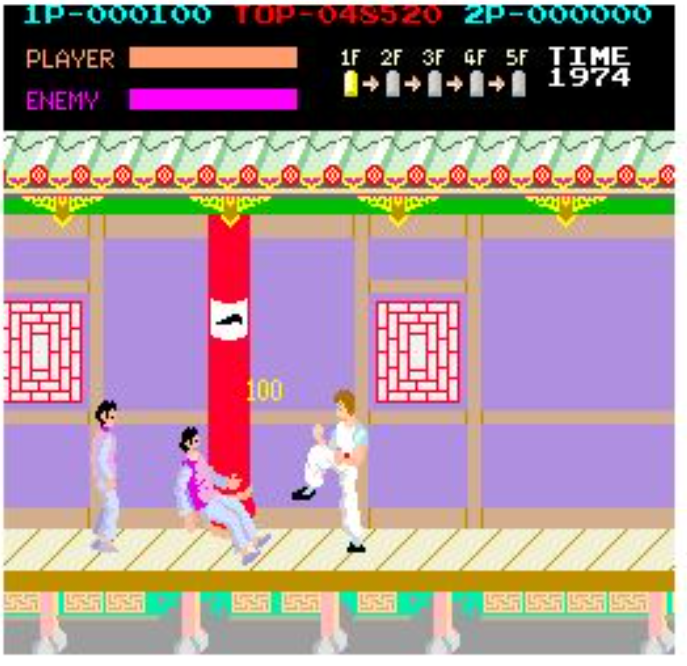
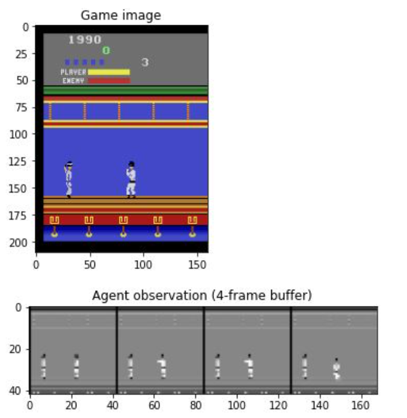
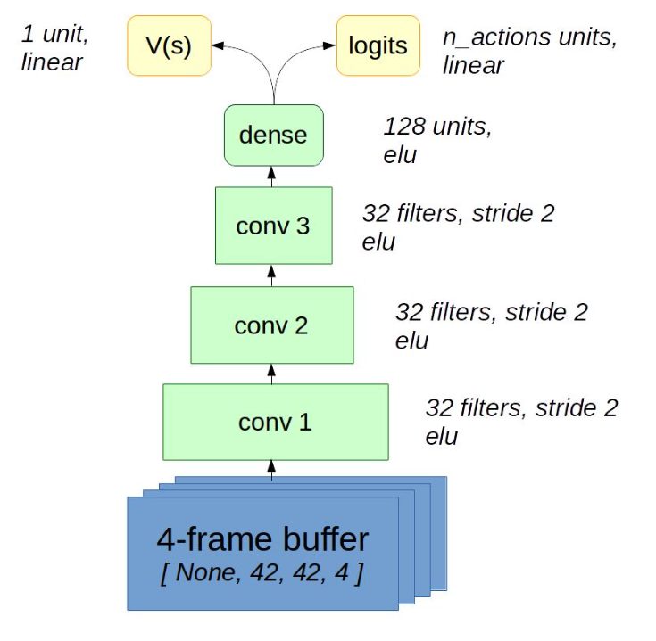

<div id="portfolio-page" class="portfolio-page-content">
    <div class="container">
        <div class="portfolio-nav">
            <div id="portfolio-close-button" class="portfolio-close-button">
                <a href="#portfolio"><i class="fa fa-close"></i></a>
            </div>
        </div>

        <div class="portfolio-title">
            <h1>Portfolio Project</h1>
        </div>

        <div class="row">
            <div class="col-sm-7 col-md-7 portfolio-block">
                <div class="owl-carousel portfolio-page-carousel">
                    <div class="item">
                        
                    </div>
                    <div class="item">
                        
                    </div>
                    <div class="item">
                        
                    </div>
                </div>

                <div class="portfolio-page-video embed-responsive embed-responsive-16by9">
                  <iframe class="embed-responsive-item" src="https://youtu.be/A4EvvPbbHXw?autoplay=0"></iframe>
                </div>

                <!--
                <div class="portfolio-page-image">
                    
                </div>
                -->

                <script type="text/javascript">
                    jQuery(document).ready(function($){
                        $('.portfolio-page-carousel').owlCarousel({
                            smartSpeed:1200,
                            items: 1,
                            loop: true,
                            dots: true,
                            nav: true,
                            navText: false,
                            margin: 10
                        });
                    }); 
                </script>
            </div>

            <div class="col-sm-5 col-md-5 portfolio-block">
                <!-- Project Description -->
                <div class="block-title">
                    <h3>Description</h3>
                </div>
                <ul class="project-general-info">
                    <li><p><i class="fa fa-user"></i> Arezoo Alipanah</p></li>
                    <li><p><i class="fa fa-globe"></i> <a href="https://github.com/ArezooAalipanah/RL_Examples/blob/main/week5_policy_based/practice_a3c.ipynb" target="_blank">Github repository</a></p></li>
                    <li><p><i class="fa fa-calendar"></i> 2021</p></li>
                </ul>

                <p class="text-justify">This project is training an agent for playing Atari Kung-Fu Master gym environment with parallel 
                    Advantage Actor-Critic method. First, four grayscaled frames are stacked and cropped to make the agent interpret 
                    the object's velocity. Then, the agent is built with three convolutional neural layers containing 32 filters and 
                    the elu activation function, followed by a final dense layer with 128 units. Finally, there are two outputs, one for 
                    the actor and one for the critic part, the actor has its units based on the number of actions in the game, and the critic 
                    is the value predicted which has one unit. Then, the environment is trained to get the rewards. The training process is
                     done with ten different environments on parallel to make the training more stable. For each of the environments, 
                     the agent tries to use this a3c algorithm to improve its rewards. After reaching a good reward, and a near-zero policy 
                     entropy, it is interpreted that the agent has learned the policy.</p>
                <!-- /Project Description -->

                <!-- Technology -->
                <div class="tags-block">
                    <div class="block-title">
                        <h3>Technology</h3>
                    </div>
                    <ul class="tags">
                        <li><a>Jupyter Notebook</a></li>
                        <li><a>Python</a></li>
                        <li><a>TensorFlow</a></li>
                        <li><a>Pytorch</a></li>
                    </ul>
                </div>
                <!-- /Technology -->

                <!-- Share Buttons 
                <div class="btn-group share-buttons">
                    <div class="block-title">
                        <h3>Share</h3>
                    </div>
                    <a href="#" target="_blank" class="btn"><i class="fa fa-facebook"></i> </a>
                    <a href="#" target="_blank" class="btn"><i class="fa fa-twitter"></i> </a>
                    <a href="#" target="_blank" class="btn"><i class="fa fa-dribbble"></i> </a>
                </div>
                </Share Buttons -->

                
            </div>
        </div>
    </div>
</div>
